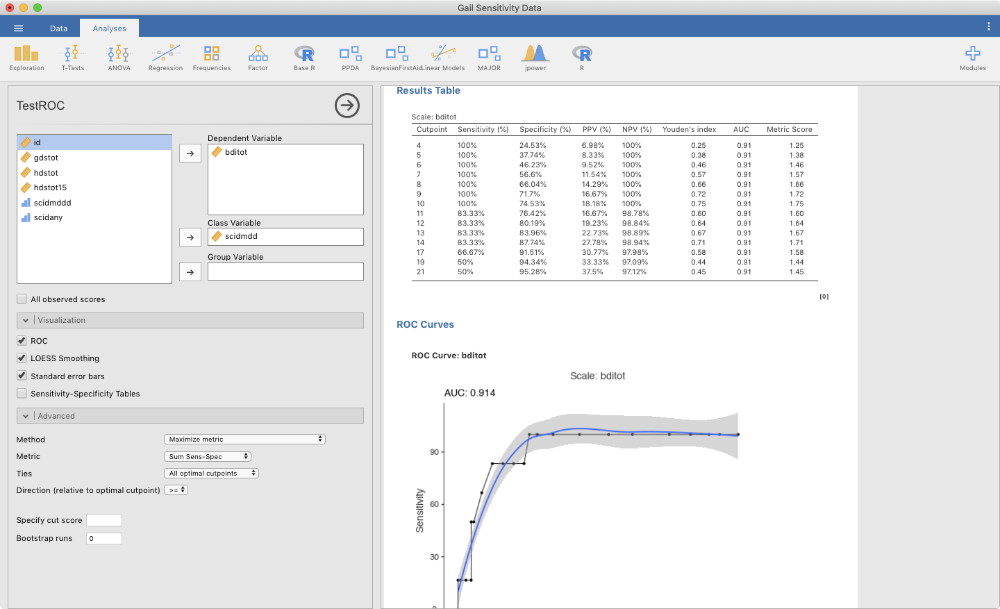
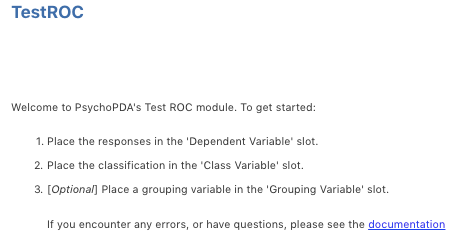
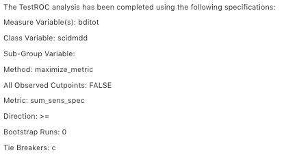
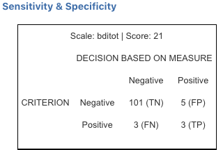

TestROC - Getting Started
Test Response Operating Characteristic module of the Psychometrics & Post-Data Analysis suite for jamovi

The module provides an interface for performing test ROC/AUC analyses and comparisons. The module supports comparing multiple measures as well as multiple groupings, with the option to perform design analysis and view ROC curves. The goal of this module is to facilitate measure validation work by creating an easy-to-use interface for collecting publication-ready tables and vizualizations.
Procedure Notes
Upon loading the module, the instsructions below will be displayed, indicating the minimum requirements for beginning an analysis.

Once the variables have been set, the instructions are replaced with a descriptive overview of the analysis.

Variables
Set the variables from your data according to the instructions provided on the right-hand side of the screen (noted above). Minimally, at least one response variable and one outcome variable must be provided. See the comprehensive overview section for more details and options.

Cutpoint Tables
Once the necessary variables have been set, the analysis will output a primary results table with a variety of statistics, depending on the options selected.

DeLong’s Test (Difference in AUC)
DeLong’s test is used to provide a statistical test of whether or not there is a difference between two ROC curves. Soon Gelman & Carlin’s Type-S and Type-M error rates will be calculated for performing design analysis on this test.

Sensitivity & Specificity Tables
If desired, the values needed to calculate sensitivty and specificity at each observed score/cutpoint can be provided in a series of tables.

Reciever Operating Characteristic (ROC) Curves
All scales selected for analysis can have their ROC curves plotted. In these visualizations sensitivity is on the y-axis, and 1 - specificity is on the x-axis.

More Information
A comprehensive overview of the module, including details on the many available options
Examples
Some worked out examples of analyses carried out with jamovi PsychoPDA are posted here (more to come)
Comments?
Got comments, issues or spotted a bug? Please open an issue at PsychoPDA on github or send me an email